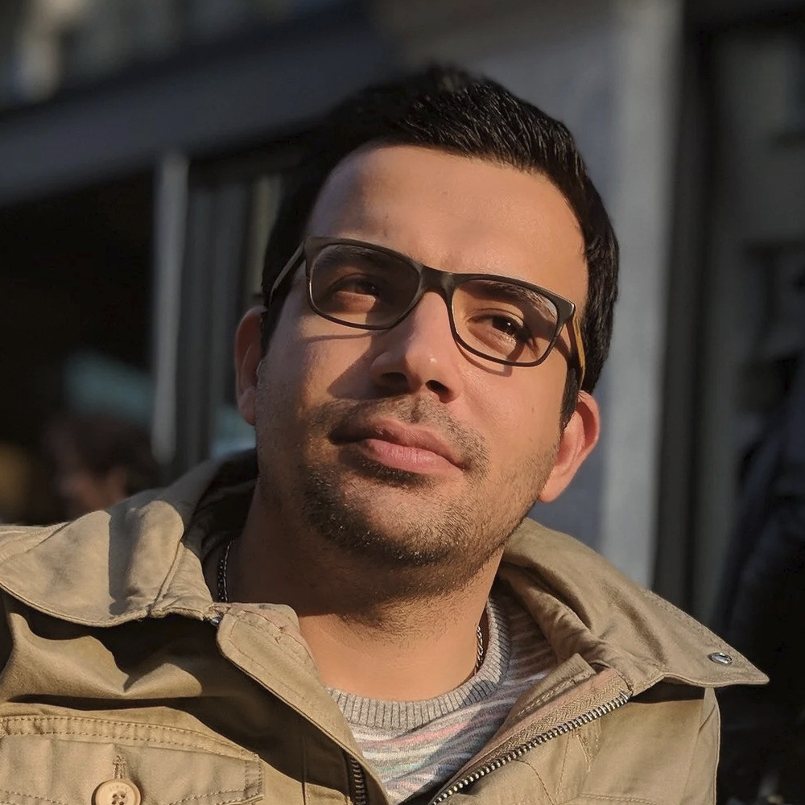
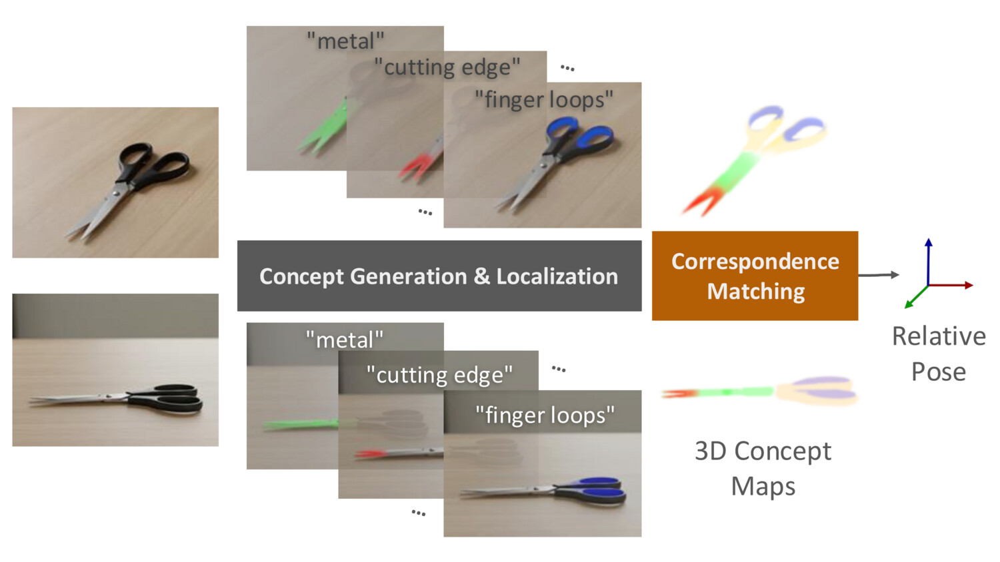
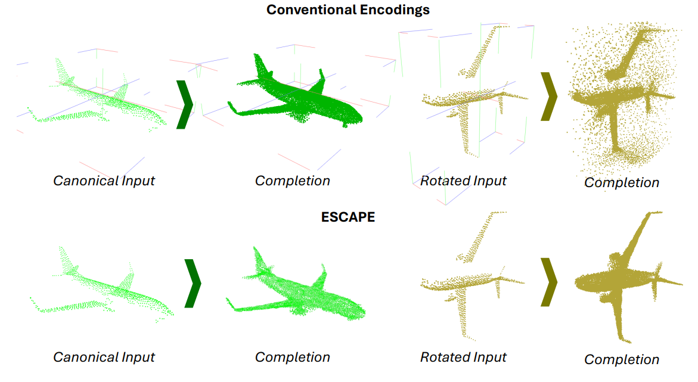
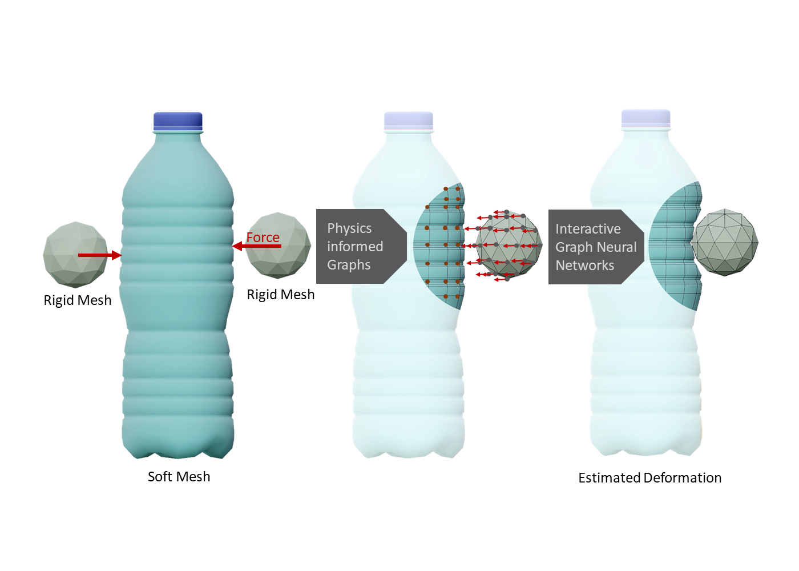
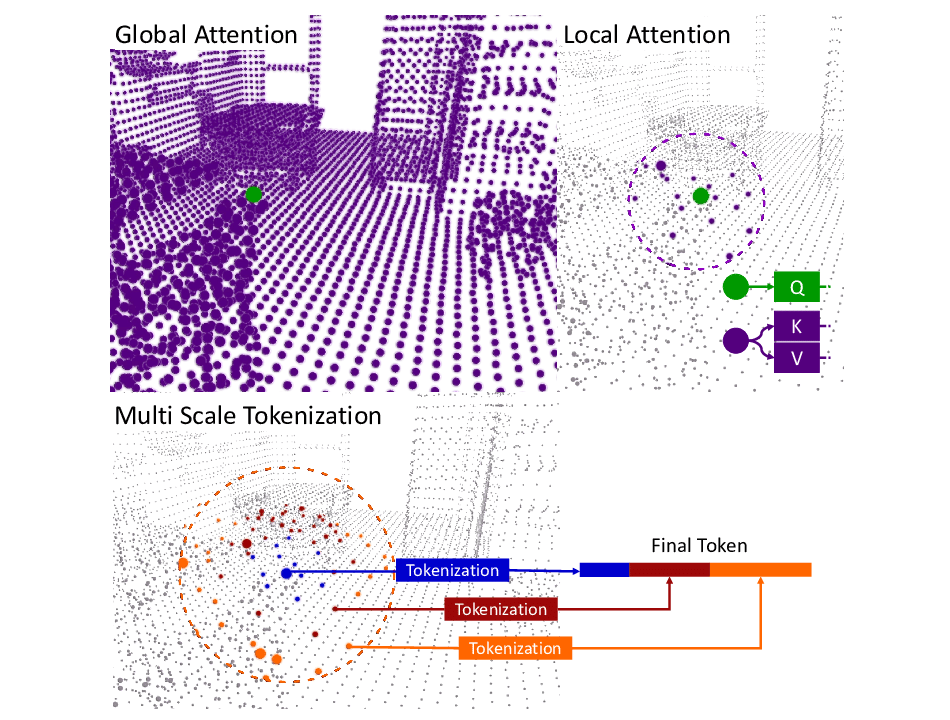
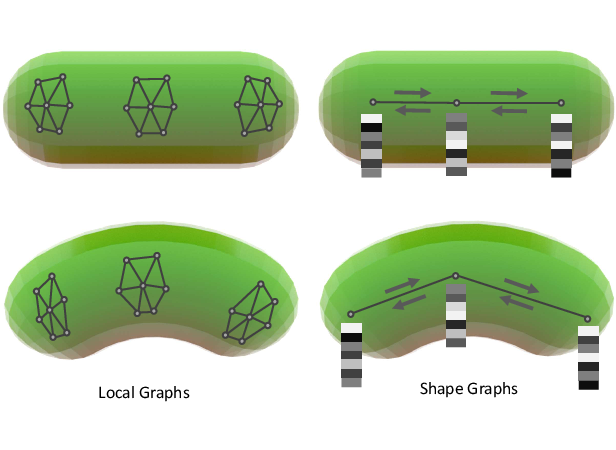
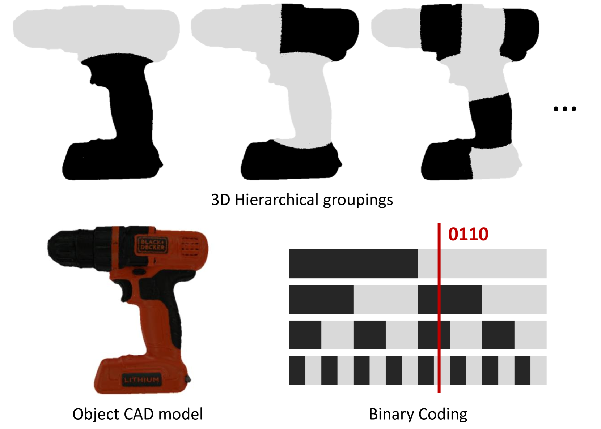
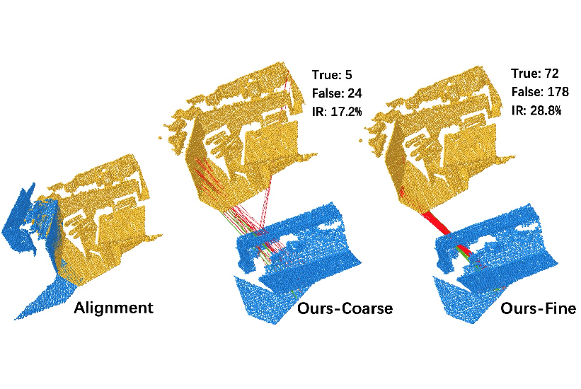
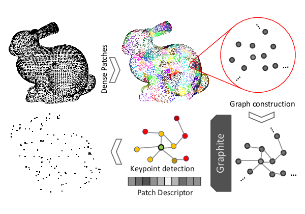

Hello! I’m Mahdi (also Mehdi) Saleh. I am a Senior Applied Scientist at Zillow, working on 3D vision and generative modeling. If you are interested in PhD internships or related opportunities, please reach out—I am happy to connect.
I completed my doctoral studies at the Technical University of Munich under Federico Tombari and Nassir Navab. My research areas include 3D object pose, hierarchical representations, graph neural networks, and vision-language models. I hold a Master’s degree in Biomedical Computing from TUM and a Bachelor’s in Electrical Control Engineering from IUST. In my leisure time, I enjoy computer graphics and design, web development, and game design.
You can find my latest CV here: CV.

CVPR
CVPR
ICRA
IROS
CVPR
CVPR
NeurIPS
3DVIf you are looking for an IDP, guided research, or Master’s thesis around these topics, please contact me.
Here is a list of current and previously supervised projects:
| Semester | Type | Topic | Student(s) | Material |
|---|---|---|---|---|
| 2023/24 WS | Master’s Thesis | Self-Supervised 3D Shape Completion By Growing Graphs | B. Bekci | |
| 2023 SS | AT3DCV Project | Exploring Unsupervised Multimodal 3D Understanding | I. Unlu, A. Jevtić, O. Aksoy | |
| 2023 SS | AT3DCV Project | Learning Deformations with Hand Interactions | G. Ünver, N. Fest, A. Kolushev | |
| 2023 SS | Master’s Thesis | Enhanced 3D ultrasound visualization through Unsupervised Segmentation | Oleksandra Tmenova | |
| 2022/23 WS | Master’s Thesis | Vertebrae shape completion in ultrasound | M. Gafencu | |
| 2022/23 WS | Master’s Thesis | Real Time Camera Relocalization In Dynamic Environment | E. Shishniashvili | |
| 2022 SS | DI-LAB Project | Partial 3D Thyroid Registration | A. Baumann, V. Burgin, E. Hoppe, H. Y. Kim | Final Report |
| 2022 SS | NLO Project | Case Studies Nonlinear Optimization: Deformable Shape Matching | B. Wu, L. Lüdtke, B. Lipp, P. Massetani | Course Webpage |
| 2022 SS | AT3DCV Project | RANSAC with GNN | A. R. Bhattarai, E. D. Franco, K. Han | |
| 2022 SS | Master’s Thesis | Domain Agnostic Feature Extraction using Graph Neural Networks | R. Srikanth | |
| 2021/22 WS | Guided Research | Self-supervised 3D Detection with Scene Flow | M. Herold, A. Srinivas | |
| 2021/22 WS | Master’s Thesis | 3D Object Detection and Pose Estimation Using Scene Graphs | S. Jeevanandam | |
| 2021/22 WS | Guided Research | Exploring point cloud shape completion and upsampling for 3D object detection | E. Abdelhafez | |
| 2021 SS | Lab Project | Hierarchical Retrieval in 3D Scans using GNN | A. Bodonhelyi, A. Desousa | |
| 2021 SS | Master’s Thesis | PointPerceiver?: Hierarchical point cloud processing with Transformers | Y. Wang | |
| 2021 SS | Master’s Thesis | Weakly-Supervised 3D Object Detection by Self-Ensembling | E. Cakir | |
| 2020/21 WS | Master’s IDP | 3D Object Detection and Flow Estimation in Dynamic Surgical Environments | D. Gokay, E. Simsar | |
| 2020/21 WS | Hiwi | 3D Pedestrian Detection from LiDAR Point Clouds | Ch. Yeshwanth | |
| 2020 SS | Guided Research | 3D Object Detection from Multi-scale Point Clouds Features | N. Danis | |
| 2020 SS | Practical Project | Tabletop Object Trajectory Augmentation using 3D Point Clouds | A. Mehrfard, I. Chan, R. Fok | |
| 2019/20 WS | Master’s IDP | Graph-based Point Cloud Registration for Tool Tracking | Shervin Dehghani | |
| 2019/20 WS | Hiwi Project | Visual Assistance with 3D captioning | HyunJun Jung | |
| 2018/19 WS | Practical Project | Autonomous Garbage Collector using 3D Computer Vision and Reinforcement Learning | HyunJun Jung, Damian Bogunowicz, Sangram Gupta | Final presentation; Video Welcome.AI |
| 2018/19 WS | Practical Project | 3D Reconstruction and Semantic Segmentation for Furniture Replacement | Vasiliki Sideri, Shervin Dehghani, Tam Tran | Final presentation |
| 2018/19 WS | Bachelor’s Thesis | Deep Reinforcement Learning Simulation for Path Planning | Tobias Valinski | |
| 2018/19 SS | Lab Course | 3D Joint Motion Visualization for Sports or Physical Therapy | Sri Divya Vajapeyajula | |
| 2018/19 SS | Lab Course | Live Avatar of 3D Human Pose Tracking | Arturo Diaz Coca | |
| 2018 SS | Bachelor’s IDP | Implementation of Mobile Robot Communication Interface and Sensor Control | Krist S. |
Powered by Jekyll and Minimal Light theme.